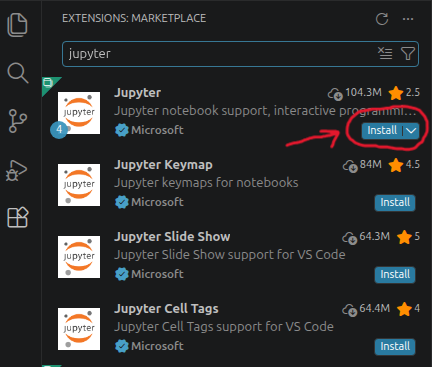
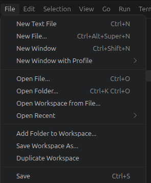
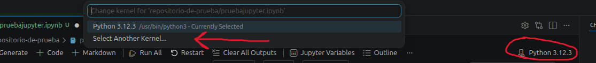
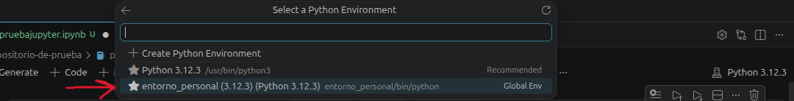

Jupyter Notebook es una aplicación web que permite crear y compartir documentos que contienen código ejecutable, ecuaciones, visualizaciones y texto narrativo. Es especialmente útil para análisis de datos, machine learning y educación. En este tutorial aprenderás a instalar Jupyter Notebook en tu sistema.
¿Por qué necesitas un entorno virtual?
Un entorno virtual es un espacio aislado en tu computadora donde puedes instalar paquetes de Python sin afectar el sistema global. Esto evita conflictos entre proyectos y es la mejor práctica profesional.
Paso 1: Crear el entorno virtual
Abre tu terminal en el directorio donde guardarás tus proyectos:
python -m venv nombre_entorno
O si tienes Python 3:
python3 -m venv nombre_entorno
Esto crea una carpeta llamada nombre_entorno con el entorno virtual.
Paso 2: Activar el entorno virtual
Linux:
source nombre_entorno/bin/activate
Una vez activado, verás el nombre del entorno entre paréntesis en tu terminal: (nombre_entorno) >
Paso 3: Actualizar pip (gestor de paquetes)
Asegúrate de que pip está actualizado:
python -m pip install --upgrade pip
Paso 4: Instalar librerías adicionales útiles
Mientras el entorno está activado, instala librerías comunes para análisis de datos:
pip install pandas numpy matplotlib scikit-learn
Estas son herramientas fundamentales para ciencia de datos.
Desactivar el entorno virtual
Cuando termines de trabajar, puedes desactivar el entorno escribiendo:
deactivate
Verás que desaparece el nombre del entorno del terminal.
VSCode tiene soporte nativo para Jupyter Notebooks. Puedes trabajar con archivos .ipynb directamente en el editor.

Instalar la extensión de Jupyter en VSCode:
Ctrl+Shift+X)
Crear un nuevo notebook en VSCode:
Ctrl+N.ipynb
Seleccionar el intérprete de Python:

Seleccionar el intérprete de Python: